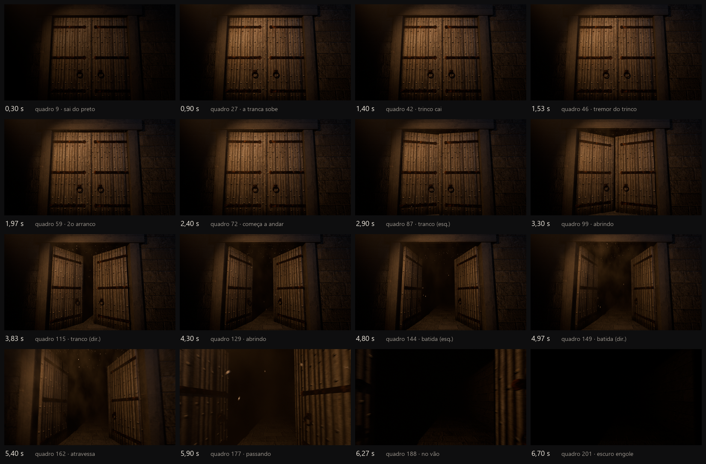
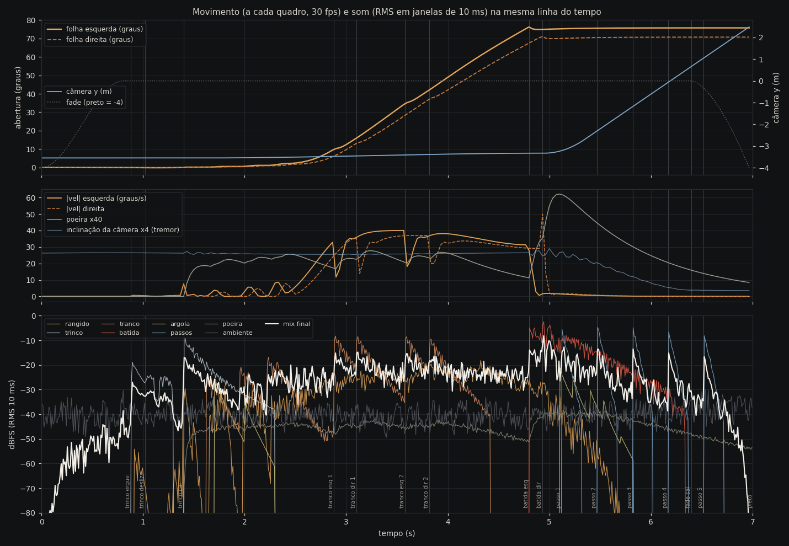

Portão de madeira
Rascunho da transição para aprovar · 7,0 s · 1280×720 · 30 fps · EEVEE · com som
Em loop, sem som. O botão toca uma vez do começo, com som.
Só o som:
baixar o .wav
Como o peso foi feito
- Não arranca de uma vez. Depois do trinco cair (1,40 s), cada folha cede três vezes um fio (0,25 a 0,9 grau), para e cede de novo. Só em 2,3 s começa a andar.
- Inércia. Acelera devagar até ~40 graus por segundo e engasga duas vezes por folha: a dobradiça prende (a velocidade cai a 15% em ~30 ms), solta e escapa um pouco mais rápido.
- Chega batendo. A folha bate no batente ainda andando, volta 1 grau e assenta. A direita vem 0,13 s atrás e abre menos (71 contra 76 graus), então são dois baques.
- O corpo sente. A câmera treme no trinco e nas batidas (senóide amortecida de 8 Hz), as argolas de ferro balançam e batem de volta na madeira, cai pó da verga (482 grãos e uma nuvem), e depois a câmera atravessa com o balanço de cada passo.
- Som na mesma linha do tempo. O rangido grave é o atrito gruda-solta da dobradiça excitando os modos da folha, guiado pela velocidade de cada folha quadro a quadro; trinco, trancos, baques, argolas e passos caem no instante exato dos eventos.
Folha de contato

Movimento e som na mesma linha do tempo

| Medida do som | Valor | Meta |
|---|---|---|
| Volume integrado (LUFS, ffmpeg ebur128) | -20,0 | -23 a -18 ok |
| Pico verdadeiro (dBTP) | -1,9 | até -1 ok |
| Cliques e amostras cortadas (medidas da casa) | 0 e 0 | 0 ok |
| Eventos achados no som a ±1 quadro (trinco, trancos, batidas, passos) | 12 de 12 | todos ok |
| Trecho mais alto (janela de 0,1 s) | 4,95 s | nas batidas ok |
Medir não é ouvir. Os números conferem volume, pico, cliques e o casamento com a imagem; se o rangido convence, se o baque pesa e se os passos soam bem, só o ouvido decide.
Licenças
| Item | Origem | Licença |
|---|---|---|
| Madeira das folhas | medieval_wood, Rob Tuytel, Poly Haven | CC0 |
| Batentes e verga | dark_wooden_planks, Amal Kumar, Poly Haven | CC0 |
| Ferro das faixas, rebites e argolas | rust_coarse_01, Dimitrios Savva e Rico Cilliers, Poly Haven | CC0 |
| Pedra da parede e do chão | medieval_blocks_03, Rob Tuytel, Poly Haven | CC0 |
| Portão, luz, poeira, câmera | modelados por script nesta pasta | nosso |
| Som | sintetizado do zero, sem amostra gravada | nosso (CC0 por construção) |
O que ainda está fraco
- A abertura é quase toda no escuro do lado esquerdo: a folha esquerda vira para longe do lampião e fica em sombra.
- A travessia é rápida (3,2 m/s, mais trote que passo) para caber em 1,4 s.
- O som é todo sintetizado; o rangido pode soar "eletrônico" para quem conhece porta de verdade. Ninguém ouviu ainda.